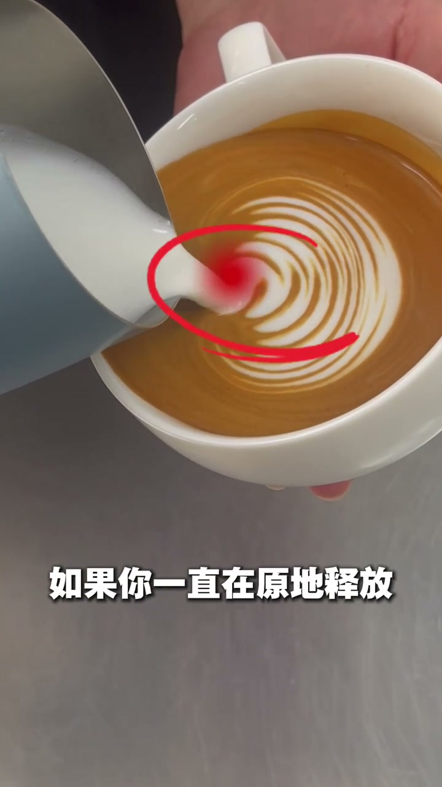
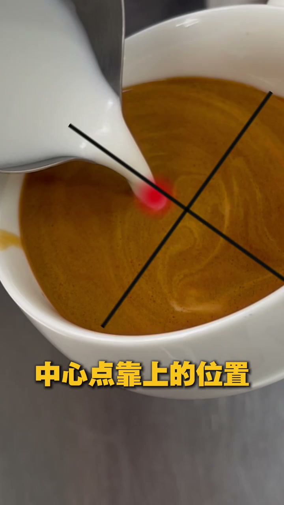
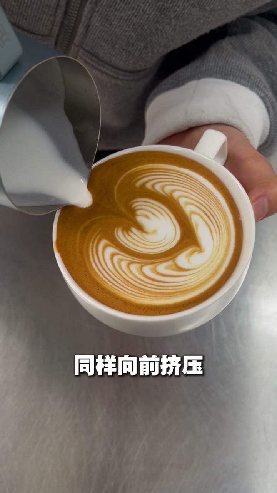

内容要点
拉花郁金香不饱满的根本原因是在摆动时原地释放、没有往前推进。正确的"回包"技巧分为两步：第一层融合后中心点上方注入并摆动向前推形成U形，第二层同样向前挤压让图案饱满。这是压纹郁金香从扁平到立体的关键动作。
知识结构
[00:00→14:60]
错误诊断：原地释放
摆动时一直停在原地释放，流量推不出去，图案原地形成，底部不饱满——这就是没有"包裹"的原因。
[14:60→24:52]
第一层回包操作
融合四五分满后，在中心点上方注入，边摆动边把缸嘴往前推，图案形成向下的U形。
[24:52→31:48]
第二层挤压成形
推第二层时同样向前挤压，让图案饱满起来，形成漂亮的回包效果。
核心口诀
不是"摆着不动"，而是"摆着向前推"。两层都向前挤压，郁金香自然饱满。
错误诊断：为什么郁金香不饱满？
[00:00 → 14:60]视频一开头就点中要害：完成融合后开始摆动时，如果你一直在原地释放，那流量就推不出去。图案在同一个位置原地形成，底部自然不饱满——这就是郁金香没有"包裹"的根本原因。

[00:05] 原地释放时流量推不出去，图案底部不饱满
Releasing in place can't push the flow out, leaving the pattern's base not full
正确的回包操作：摆着往前推
[14:60 → 31:48]正确做法分两层。第一步：融合到四五分满，在中心点靠上的位置注入奶泡，开始摆动的同时把缸嘴往前推，图案会形成一个向下的U形。第二步：这个时候再推第二层，同样是向前挤压，让图案层层叠叠饱满起来，最终形成漂亮的回包郁金香。

[00:18] 第一层回包：缸嘴摆动着向前推进，图案呈U形
First return pass: the pitcher sways forward, forming a U-shape

[00:27] 第二层同样向前挤压，郁金香图案饱满成形
The second layer presses forward the same way, and the tulip pattern fills out